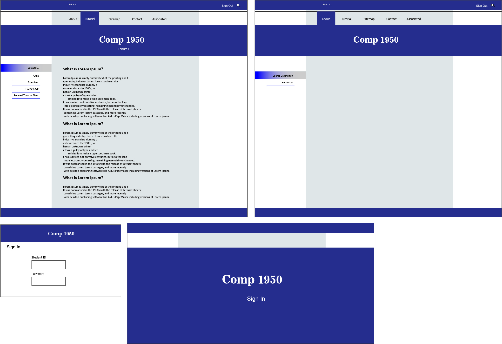

First of all, Neda created Sitemap and template for website by Adobe Illustrator which was included of four Sample page of website:
There is a picture of suggested Template:
After that Jason wrote code in Html and Css for Lecture page and About page and their navigation menu
Neda wrote code in Html and Css for Home page and Log In page plus print style for lecture page and she created Introduction page
Sheldon created Dropdown Menu for pages and wrote style for in-class overhead projector and he created Rationale
page plus he created all lecture pages and contents.